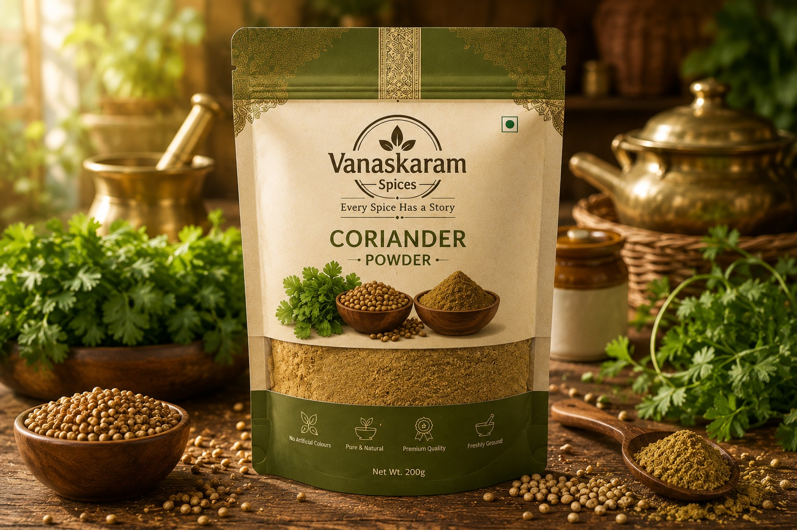
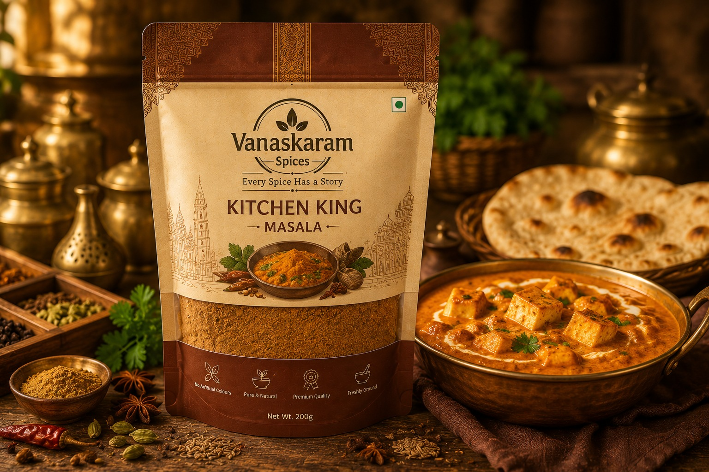
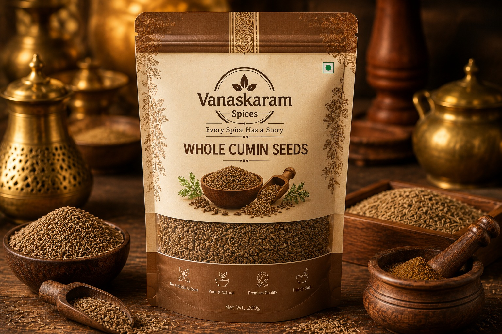

Your Shopping Cart
Review your selected products before proceeding to checkout.
| Product | Details |
|---|---|

|
Origin: Idukki, Kerala Handpicked from the lush plantations of Kerala, our Malabar Black Pepper is celebrated for its bold aroma, robust flavour, and exceptional quality, adding warmth and depth to every recipe. Quantity: 1 Price: ₹349 Total: ₹349 Remove |
|
 |
Origin: Kochi, Kerala Prepared from carefully selected coriander seeds grown in Gujarat, this spice offers a warm, citrusy aroma and fresh flavour that complements a wide variety of Indian dishes. Quantity: 1 Price: ₹349 Total: ₹349 Remove |
|
 |
Origin: Gujarat A premium blend of authentic Indian spices, King Masala adds depth, richness, and bold flavour to curries, vegetables, and everyday meals, bringing restaurant-quality taste to your kitchen. Quantity: 1 Price: ₹349 Total: ₹349 Remove |
|
 |
Origin: Rajasthan Sourced from the fertile fields of Rajasthan and Gujarat, our cumin seeds are naturally sun-dried to preserve their earthy aroma and distinctive flavour, perfect for tempering and spice blends Quantity: 1 Price: ₹349 Total: ₹349 Remove |
Order Summary
Subtotal: ₹1468
Shipping: Free
Taxes: Included
Grand Total: ₹1468
Proceed to Checkout